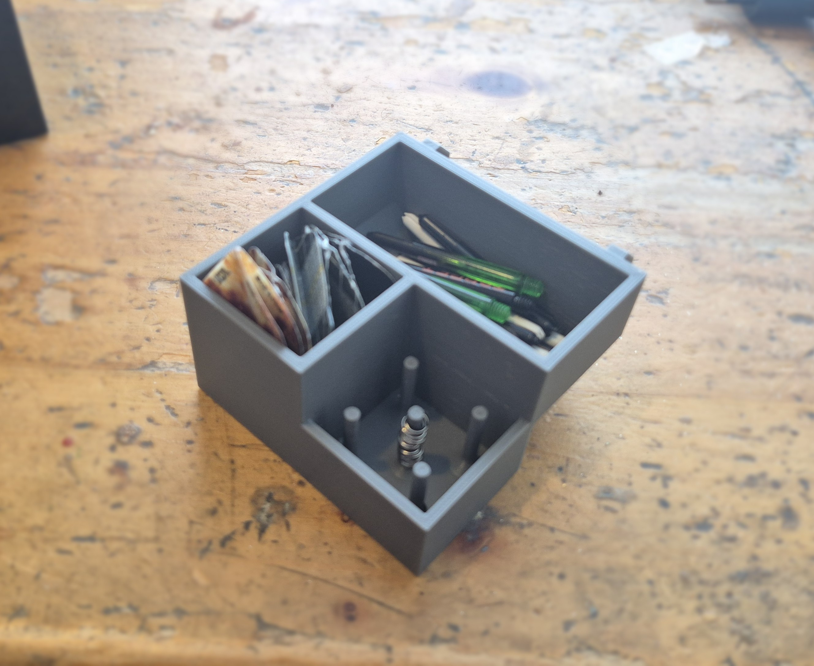
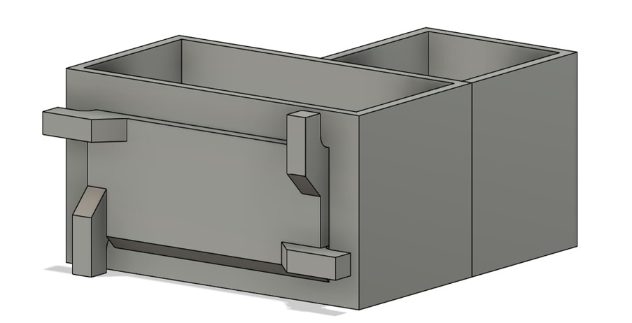
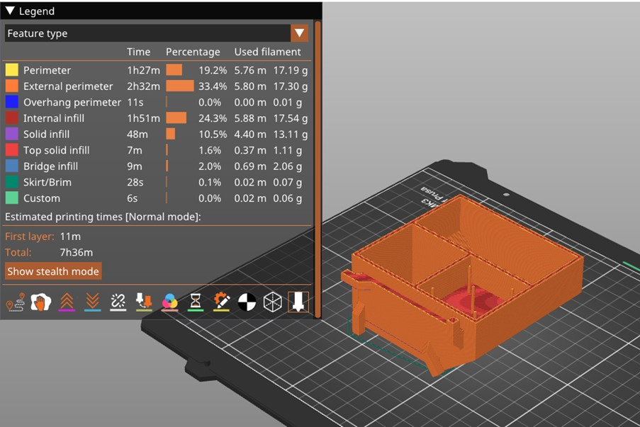
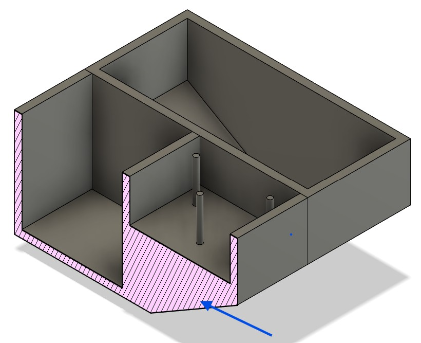
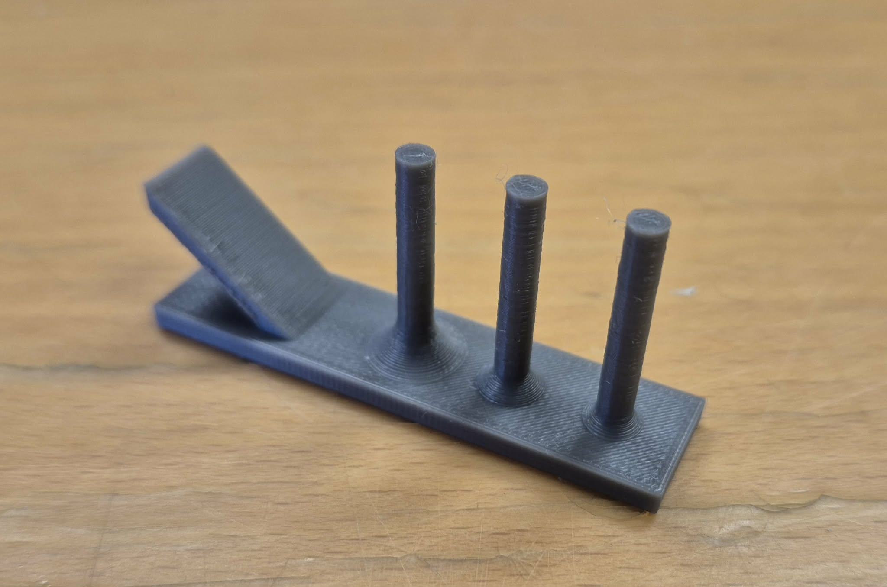
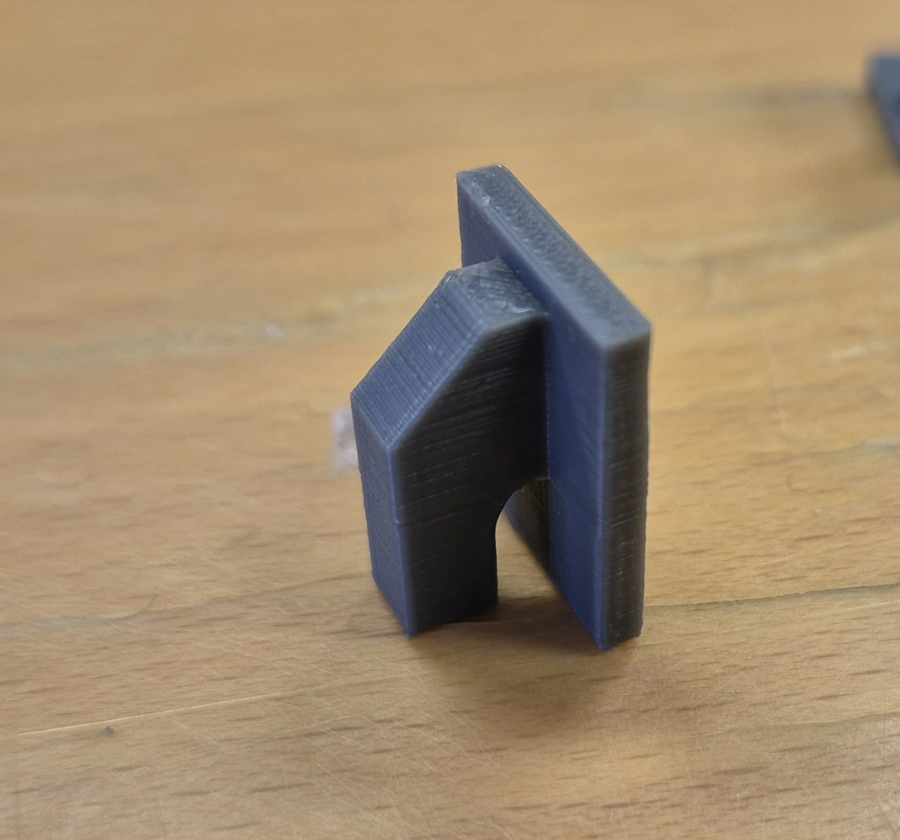
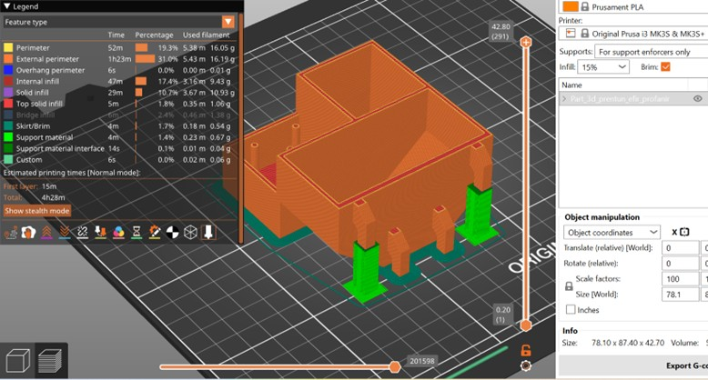
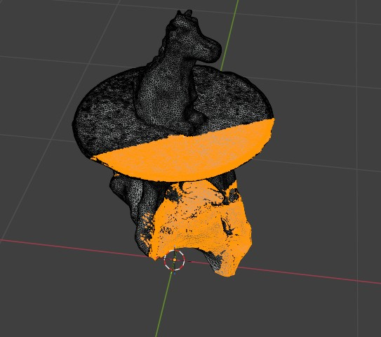

Assignment 3 - 3D Printing and 3D Scanning
In this assignment, I am required to design a small model (a maximum of 100 g of plastic) to be 3D printed. The model should not be possible to make using subtractive manufacturing (additive vs. subtractive). Before printing the full part, I need to carry out smaller tests on the 3D printer to determine the design rules and limitations. Another part of this assignment is 3D scanning an object of my choice. Lastly, I am required to explain the process and what I learned from it.
3D Printing

While making a dart holder and phone holder in Assignment 2, I decided to 3D print the holder for the dart components. This allowed me to be a little more creative with the design. I also wanted the component holder to be easy to assemble and disassemble from the main assembly. I did not really have a specific inspiration when creating this part, but I knew what it needed to include. It required three compartments: one for the feathers, one for the shafts, and another for the shaft rings. Lastly, it needed an attachment feature so it could be assembled with the phone holder, and that feature would not be possible to make using subtractive manufacturing. The locking attachment includes undercut geometry that is easy to print additively as one part, but difficult to machine subtractively from a solid block without splitting the part into multiple pieces.
1st Design
Below is the first draft that I made. There are three compartments, the thin cylinders are used to hold the shaft rings, and I planned to use a keyhole to assemble the part to the phone holder. The following concerns for this part were:
- The angle of the chamfer may be too shallow relative to the horizontal axis. In https://fabacademy.org/2020/labs/leon/students/adrian-torres/week05.html, they discuss some 3D printers and their allowable overhang angles before support is needed. The closer a surface is to horizontal, the greater the risk that it cannot be printed without supports.
- The thin cylinders: online, you can find that thin cylinders can cause several problems. One issue is that the layers may not have enough time to cool before the next layer is added, which can create a stuttering effect like the one shown in this video https://www.youtube.com/watch?v=BJC7yj1GPHY. There are also some other potential problems to check.
- The attachment and its offset from the part: in its current state, this would require supports when 3D printed, and the assembly on the phone holder might not be as stable as I would have liked.
2nd Design
To improve the design, I decided to use a different wall attachment, shown in Figure 1 below. The attachment should go into the wall at a certain angle and then be turned slightly to lock it in place at 90 degrees.

I read about the ideal wall thickness for 3D printing and noted that the default extrusion width in PrusaSlicer is 0.45 mm, so I made most of the walls 0.45 × 6 lines = 2.7 mm thick. I then saved the part from Fusion as a .3mf file and opened it in the PrusaSlicer app to check the total print time, material usage, and any errors the app identified (overhang perimeters).


The estimated print time was 7 hours and 36 minutes, which I felt was too much. A lot of that time was spent on internal infill because the rings compartment needed to be smaller than the other component compartments. I decided to move it down to the bottom, and that fixed the issue, although I then had to move the attachments to the other side.
Testing parts of the design
To make sure that everything in the prototype would work, I 3D printed some individual features of the design to check whether the printer could handle them and how accurate the dimensions would be on certain parts. These are the resulting printed parts.


They all turned out quite well. The cylinders were the correct size, and I could fit the rings around them.
The shallowest slope I had from the horizontal line was 40 degrees, so I tested whether the printer could do that, and it could.
The only issue came from the wall attachments, where the gap needed to be 3 mm, or at least close enough to that dimension, to be a press fit with the wall. I tested it on a plate that was 3 mm thick, and it was not a press fit; there was a significant gap of around 0.8 mm. This meant that it would not lock into place with the wall. However, all the parts were much stronger than I had anticipated, so it would be acceptable for the attachment to simply act as hooks on the wall. Because of that, the dimensions did not need to be changed.
Final Design of the part
The final design took about 4 hours and 30 minutes to print, and it only used supports for the upper attachment, as you can see in Figure 4 below. I used the 0.20 mm SPEED profile, 15% infill, a brim, and supports for enforcers only. I used paint-on supports to select the places where I wanted supports, exported the G-code to an SD card, inserted it into the 3D printer, and started the print.

Here you can see a short video of the 3D print
Final Design
Here is the final design, here you can see that the attachments and the curved bottom below could not be done with subractive manufacturing
3D Scanning
For the 3D scan, I chose to scan a dinosaur-shaped candle from my home. I used the KIRI Engine app, which allowed me to take around 150 photos of the object and generate a 3D model from them. It took a few attempts to get a good result, as the scan was quite sensitive to the lighting conditions, but after adjusting the lighting around the object, the final scan turned out well.

The scan was exported as a zip file containing three files: an .obj, an .mtl, and a texture image file. However, the 3D model also included parts of the stool that the dinosaur was placed on during the scan. To clean this up, I imported the files into Blender. In Blender, I entered Edit Mode by pressing Tab, selected the parts of the stool that had been captured, and deleted them from the mesh. After cleaning the model, I exported it as a .glb file so it could be displayed more easily on a website.
Below is an interactive 3D view of the scanned object.
I think the final scan captured the overall shape of the dinosaur candle quite well, and the object is still easy to recognize in the 3D model. Despite that, it could have had more even lighting, a simpler background, and a clearer separation between the object and its surroundings would likely have improved the result. It also generally helps to take many overlapping photos from different angles so that all parts of the object are captured more accurately.
Search words and search pages
For this assignment I mainly used ChatGpt and Google to find information, while also using Youtube to learn about the Prusa Slicer. The main things I searched for were
- Best free 3D scanning app for Android
- Rules to making a good 3D scan
- Difference between additive and subtractive manufacturing
- Rules to making a 3D printing as strong as possible, with PLA material
- Are there any possible issue with making thin cylinders in 3D-printing
- How to prepare a model from fusion for 3D printing in the Prusa Slicer.
Final Thoughts
This assignment gave me a much better understanding of both the possibilities and the limitations of additive manufacturing and 3D scanning. In the 3D printing part, I learned how important it is to design with the manufacturing process in mind, especially when considering wall thickness, overhangs, support material, print time, and fit between parts. Testing smaller features before printing the final part helped me improve the design and avoid larger mistakes. In the 3D scanning part, I learned that lighting and the surrounding environment have a major effect on scan quality, and that some post-processing is usually needed to clean the final model. Overall, this assignment showed me the value of iteration, testing, and adjusting a design based on real manufacturing results.
Thingiverse
All files from this assignment can be found here, https://www.thingiverse.com/thing:7306218.